4.3 Integrated Rate Equations
We have already noted that the concentration dependence of rate is called differential rate equation. It is not always convenient to determine the instantaneous rate, as it is measured by determination of slope of the tangent at point ‘t’ in concentration vs time plot (Fig. 4.1). This makes it difficult to determine the rate law and hence the order of the reaction. In order to avoid this difficulty, we can integrate the differential rate equation to give a relation between directly measured experimental data, i.e., concentrations at different times and rate constant.
The integrated rate equations are different for the reactions of different reaction orders. We shall determine these equations only for zero and first order chemical reactions.
4.3.1 Zero Order Reactions
Zero order reaction means that the rate of the reaction is proportional to zero power of the concentration of reactants. Consider the reaction,
R → P
Rate = 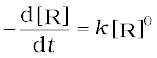
As any quantity raised to power zero is unity
Rate = 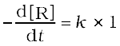
d[R] = – k dt
Integrating both sides
[R] = – k t + I (4.5)
where, I is the constant of integration.
At t = 0, the concentration of the reactant R = [R]0, where [R]0 is initial concentration of the reactant.
Substituting in equation (4.5)
[R]0 = – k × 0 + I
[R]0 = I
Substituting the value of I in the equation (4.5)
[R] = -kt + [R]0 (4.6)
Comparing (4.6) with equation of a straight line,
y = mx + c, if we plot [R] against t, we get a straight line (Fig. 4.3) with slope = –k and intercept equal to [R]0.
Further simplifying equation (4.6), we get the rate constant, k as
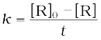 (4.7)
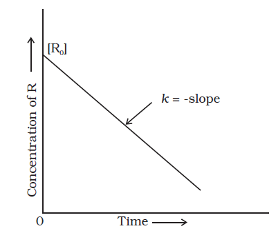
Fig. 4.3: Variation in the concentration vs time plot for a zero order reaction
Zero order reactions are relatively uncommon but they occur under special conditions. Some enzyme catalysed reactions and reactions which occur on metal surfaces are a few examples of zero order reactions. The decomposition of gaseous ammonia on a hot platinum surface is a zero order reaction at high pressure.
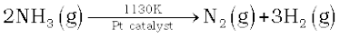
Rate = k [NH3]0 = k
In this reaction, platinum metal acts as a catalyst. At high pressure, the metal surface gets saturated with gas molecules. So, a further change in reaction conditions is unable to alter the amount of ammonia on the surface of the catalyst making rate of the reaction independent of its concentration. The thermal decomposition of HI on gold surface is another example of zero order reaction.
4.3.2 First Order Reactions
In this class of reactions, the rate of the reaction is proportional to the first power of the concentration of the reactant R. For example,
R → P
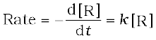
or 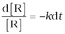
Integrating this equation, we get
ln [R] = –kt + I (4.8)
Again, I is the constant of integration and its value can be determined easily.
When t = 0, R = [R]0, where [R]0 is the initial concentration of the reactant.
Therefore, equation (4.8) can be written as
ln [R]0 = –k × 0 + I
ln [R]0 = I
Substituting the value of I in equation (4.8)
ln[R] = -kt + ln[R]0 (4.9)
Rearranging this equation
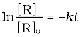
or 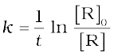 (4.10)
At time t1 from equation (4.8)
*ln[R]1 = – kt1 + *ln[R]0 (4.11)
At time t2
ln[R]2 = – kt2 + ln[R]0 (4.12)
where, [R]1 and [R]2 are the concentrations of the reactants at time t1 and t2 respectively.
Subtracting (4.12) from (4.11)
ln[R]1– ln[R]2 = – kt1 – (–kt2)
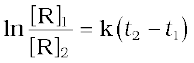
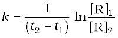 (4.13)
Equation (4.9) can also be written as
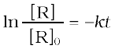
Taking antilog of both sides
[R] = [R]0 e-kt (4.14)
Comparing equation (4.9) with y = mx + c, if we plot ln [R] against t (Fig. 4.4) we get a straight line with slope = –k and intercept equal to ln [R]0
The first order rate equation (4.10) can also be written in the form
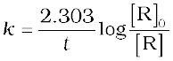 (4.15)
*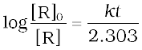
If we plot a graph between log [R]0/[R] vs t, (Fig. 4.5), the slope = k/2.303
Hydrogenation of ethene is an example of first order reaction.
C2H4(g) + H2 (g) → C2H6(g)
Rate = k [C2H4]
All natural and artificial radioactive decay of unstable nuclei take place by first order kinetics.
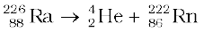
Rate = k [Ra]
Decomposition of N2O5 and N2O are some more examples of first order reactions.
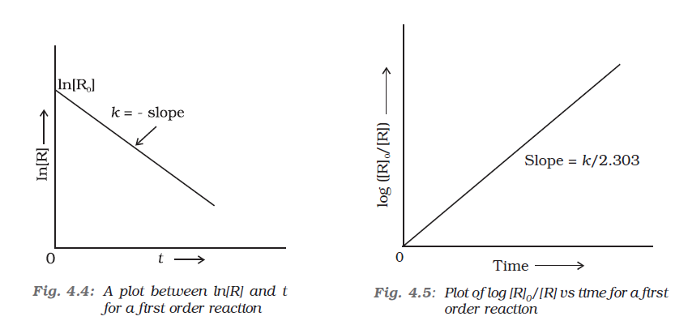
Let us consider a typical first order gas phase reaction
A(g) → B(g) + C(g)
Let pi be the initial pressure of A and pt the total pressure at time ‘t’. Integrated rate equation for such a reaction can be derived as
Total pressure pt = pA + pB + pC (pressure units)
pA, pB and pC are the partial pressures of A, B and C, respectively. If x atm be the decrease in pressure of A at time t and one mole each of B and C is being formed, the increase in pressure of B and C will also be x atm each.
A(g) → B(g) + C(g)
At t = 0 pi atm 0 atm 0 atm
At time t (pi–x) atm x atm x atm
where, pi is the initial pressure at time t = 0.
pt = (pi – x) + x + x = pi + x
x = (pt - pi)
where, pA = pi – x = pi – (pt – pi)
= 2pi – pt
k = 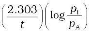 (4.16)
= 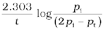
Example 4.5
The initial concentration of N2O5 in the following first order reaction N2O5(g) → 2 NO2(g) + 1/2O2 (g) was 1.24 × 10–2 mol L–1 at 318 K. The concentration of N2O5 after 60 minutes was 0.20 × 10–2 mol L–1. Calculate the rate constant of the reaction at 318 K.
Solution
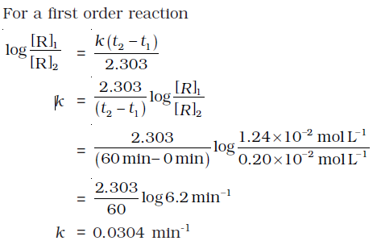
Example 4.6
The following data were obtained during the first order thermal decomposition of N2O5 (g) at constant volume:
2N O g → 2N O g + O g
| S.No. | Time/s | Total Pressure/(atm) |
| 1. | 0 | 0.5 |
| 2. | 100 | 0.512 |
Calculate the rate constant.
Solution
Let the pressure of N2O5(g) decrease by 2x atm. As two moles of N2O5 decompose to give two moles of N2O4(g) and one mole of O2 (g), the pressure of N2O4 (g) increases by 2x atm and that of O2 (g) increases by x atm.
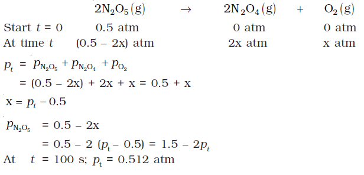
4.3.3 Half-Life of a Reaction
The half-life of a reaction is the time in which the concentration of a reactant is reduced to one half of its initial concentration. It is represented as t1/2.
For a zero order reaction, rate constant is given by equation 4.7.
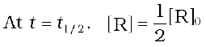
The rate constant at t1/2 becomes
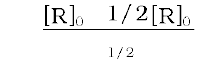
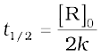
It is clear that t1/2 for a zero order reaction is directly proportional to the initial concentration of the reactants and inversely proportional to the rate constant.
For the first order reaction,
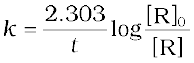 (4.15)
at t1/2 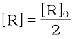 (4.16)
So, the above equation becomes
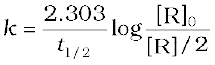
or 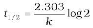
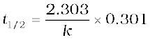
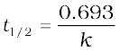 (4.17)
It can be seen that for a first order reaction, half-life period is constant, i.e., it is independent of initial concentration of the reacting species. The half-life of a first order equation is readily calculated from the rate constant and vice versa.
For zero order reaction t1/2 ∝ [R]0. For first order reaction t1/2 is independent of [R]0.
Example 4.7
A first order reaction is found to have a rate constant, k = 5.5 × 10-14 s-1. Find the half-life of the reaction.
Solution
Half-life for a first order reaction is
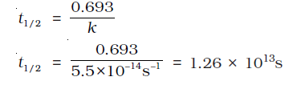
Example 4.8
Show that in a first order reaction, time required for completion of 99.9% is 10 times of half-life (t1/2) of the reaction.
When reaction is completed 99.9%, [R]n = [R]0 – 0.999[R]0
Solution
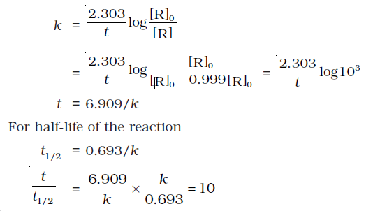
Table 4.4 summarises the mathematical features of integrated laws of zero and first order reactions.
Table 4.4: Integrated Rate Laws for the Reactions of Zero and First Order
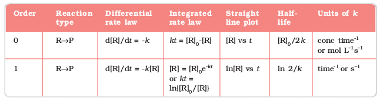